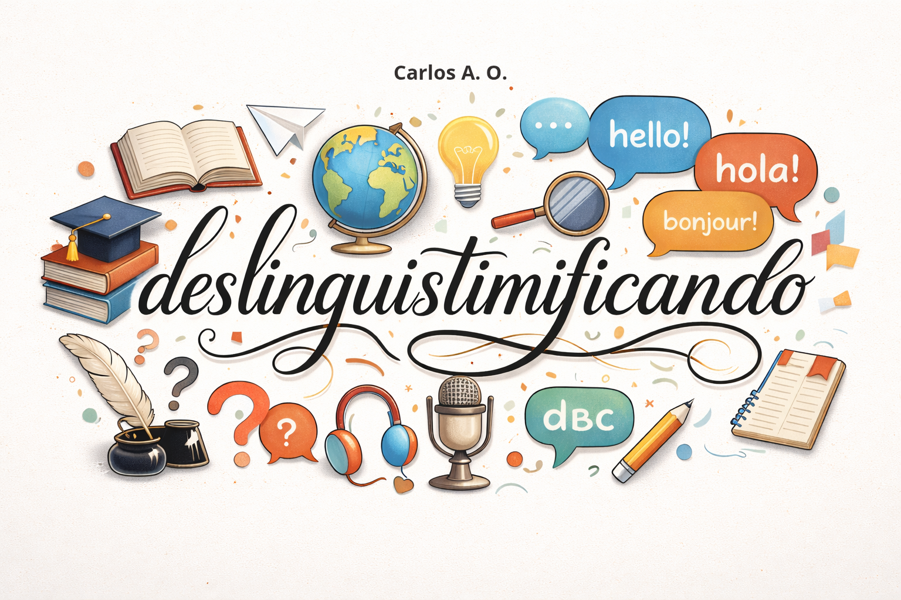

Sobre
Quem somos?
Somos apaixonados por linguística e fonética e, por aqui, trazemos um pouco dessa incrível ciência para iniciantes. Este é um campo quase que ineplorável pelas universidades, mas de riquíssima peculiaridade para o homem. Fizemos os roteiros com carinho e dedicação nos atentando para melhor deixá-los. Sempre que persistir alguma dúvida, venha nos contatar pelo Formulário.Nosso instagram oficial:
Há conteúdo em posts com textos e imagens para representar. É mais fácil de entender o que postamos lá, porque tudo no instagram é mais didático.deslinguistimificando
Nosso canal no YouTube
Temos um canal no YouTube há pouco tempo com mais conteúdos que não estão no site. Vídeos com roteitos na descrição para companhar enquanto ouve o áudio. A maior parte dele é sobre linguística brasileira, mais especificamente sobre o sotaque nordestino do norte cearense — que somos mais familiarizados. Mas também fonética brasileira no geral e também um pouco de fora, deixando o foco no Brasil.YouTube
Copyright
Imagens de fundo por nossa autoria. Portanto, proibido copiar sem permissão! Fotos que são de amigos, imagens que criamos com carinho etc. Exceto o fundo da página inicial e as tabelas do IPA, consoantes e vogais que são da:
Google LLC.